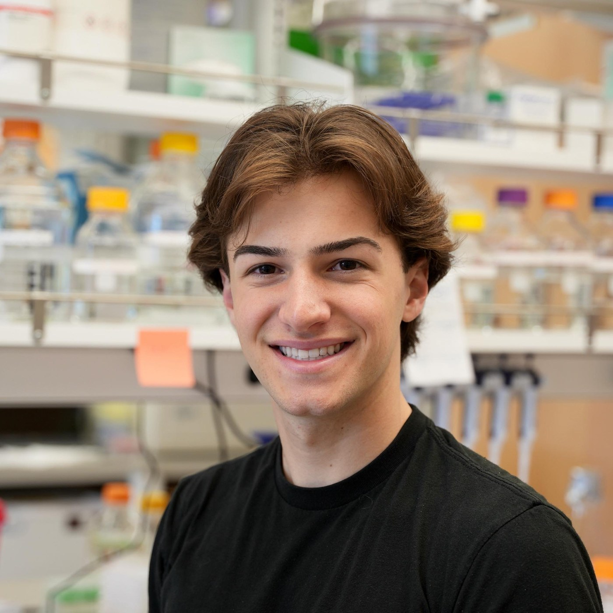

Seth M. Woodbury
Bioengineering PhD Student, David Baker Lab, University of Washington Institute for Protein Design.
I ground enzyme design in mechanism: the physical-organic logic of lowering a reaction's barrier and the transition-state geometry it demands. Then I search structure and sequence space with generative machine learning to build the protein that enforces it, rational where the chemistry constrains the answer, deep-searching where scale finds it.

I collaborate with labs, companies, and teams working on hard problems in catalysis, sustainability, and therapeutics. If you are thinking about what enzymes could do for your work, I would enjoy the conversation.
Hypothesis-driven design
For a target reaction I work through three questions. The answers define the active site, and a protein is how I build it.
Activation strategy
Acid/base, covalent, metal-ion, redox, or noncovalent transition-state stabilization, the mechanism for making the reaction go.
Productive geometry
Catalytic groups, metals, cofactors, substrate, and transition state in the right 3D and electronic geometry, which I model with computational and quantum chemistry.
Protein scaffold
A genetically encoded, programmable protein that presents that active site, which I build with generative design and refine by evolution.
Then I express, purify, and characterize each design and feed what the bench teaches back into the next hypothesis.
About
I came to protein design through chemistry, physics, and biochemistry, three fields I studied together as an undergraduate because I wanted to understand how molecules actually work. That curiosity led me from biomaterials research toward a bigger question: if we understand the physics of a reaction, can we design an enzyme to catalyze it on demand? Today, in the Baker Lab at the UW Institute for Protein Design, I build de novo metalloenzymes using generative AI, computational chemistry, and hands-on biochemistry. My goal is a future where scientists can custom-design highly active, ideal biocatalysts for any physics-allowed target reaction.
Current research
My research designs enzymes that do not exist in nature, then tests them in the lab. I combine generative models, computational chemistry, and experimental biochemistry to move from an idea for a reaction to a working, characterized catalyst.
I design metal-containing enzymes from scratch, building active sites atom by atom rather than borrowing from natural proteins. Metals let these enzymes reach chemistry that protein alone cannot.
I use RFdiffusion, ProteinMPNN, RoseTTAFold, and structure prediction to generate and validate new enzyme designs computationally. These tools turn a target reaction into candidate proteins ready for the bench.
Designed enzymes can replace harsh reagents and energy-intensive steps in manufacturing, and break down pollutants in the environment. I work toward catalysts that make green chemistry practical at scale.
I design catalytic hydrolases that neutralize nerve agents, part of a DARPA-funded program ($2M, 2025 to 2026). The same design principles extend to enzymes with therapeutic potential.
Selected work & open source
A few results I helped author, and the open-source tooling I develop for my PhD. Full press and paper links live on the In the Media page, and the complete record is on Publications.
Computational design of metal-dependent hydrolases with sophisticated active sites for ester hydrolysis.
A generative model that scaffolds enzyme backbones directly around a catalytic active site.
Designed metalloproteases with programmable substrate specificity. Preprint on bioRxiv.
Tools and pipelines for refining sequences for de novo enzyme designs.
Active-site preparation, machine-learned force-field NEB and transition-state searches, and QM job management.
Before protein design, I spent years in the Mishina Lab at the University of Michigan developing biomaterials for drug delivery and tissue engineering, including nanofibrous scaffolds for periodontal and craniofacial regeneration. It is work I am still proud of, and it taught me how molecular design translates into real biological function. The full record, including my first-author papers, is on Publications.
My biomaterials research contributed to a US patent application on nanofibrous matrices for tissue engineering.
Training & affiliations
Get in touch
Whether you have a reaction in mind, a project to discuss, or a question about protein design, I am glad to hear from you.
sethwoodbury.github.io